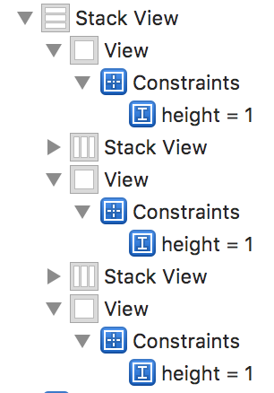
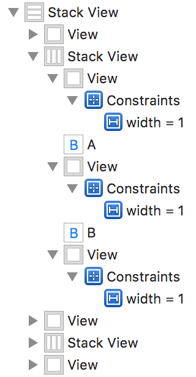
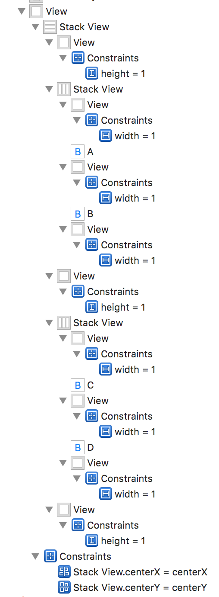
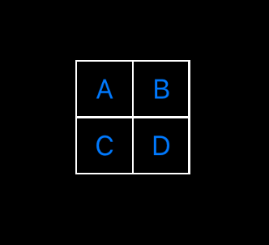

Bordered Stack View
Korey Hinton onUIStackView is a brilliant abstraction. Sometimes I love it, other times I hate it. UIStackView can make some very difficult layouts a bit easier. But can it have borders? Not easily. It needs to have the right conditions and the borders actually have to be part of the stack view. In this example I'll make a simple 2x2 cell grid.
Nested stack views
To get this to work you'll need to nest 2 stack views inside of 1 outer one. The outer stack view needs to have its axis perpendicular to the inner one. While it doesn't matter which axis is the outer one, in this tutorial I have the outer stack view be a vertical stack view. If you do it the other way you'll have to reverse the constraints.
Outer Vertical Stack View
The figure below has expanded to show just what's in the outer vertical stack view. For both stack views I left the default setting of alignment and distribution being type fill and spacing is set to 0. Obviously FillEqually would not work since the border views are part of the stack view. I made the main view's background color black so that when I drag on UIView it'll have the default white color. Notice I put plain white views between the 2 inner horizontal stack views and gave the white views a height constraint of 1. These will be the horizontal lines in the border. Note: if you are not using Fill alignment you'll have to also give those views equal widths to the superview (vertical stack view) so that it knows how wide the view is to be, but in this example we're using Fill alignment so we're golden:
Inner Horizontal Stack Views
The inner stack views contain the buttons A, B, C, D. I've expanded just the first one of the two inner horizontal stack views so that you can see how the A and B buttons are surrounded by UIViews that have width constraints set to 1. These white views will provide the vertical borders between and around the buttons.
The Full Stack View
Here is the whole view hierarchical outline. Notice I've added horizontal and vertical centering constraints between the outer stack view and the main view.
The Result
So after all that work just to show a 2x2 grid, here it is:
Remember that this gets pretty complicated but is a hack to get something small and simple to work. If you have a much larger number of arranged subviews then this might be too much work and if you are changing the layout axis based on size classes you'll have to have 2 sets of all these constraints. Its also important to note that even if I had 1 dimensional layout, like just simply a single column of rows I still need the nesting of stack views since borders need to be applied in 2 dimensions. Good luck.
See the storyboard file
You can visit my BorderedStackViewTester github repository to download the project and see exactly how the storyboard file looks.